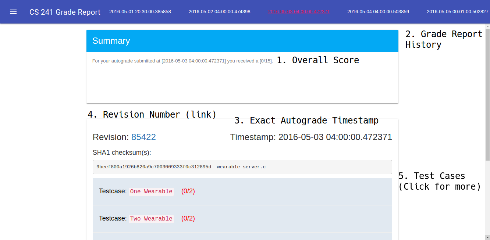

Learning Objectives#
The learning objectives for Debugging Guide are:
- Learning how to debug 241 Code
SVN#
The autograder has given you bad test cases! First let’s step through this.
This is an example log given when you run svn log
$ svn log
------------------------------------------------------------------------
r52475 | bvenkat2 | 2016-10-16 22:23:09 -0500 (Sun, 16 Oct 2016) | 1 line
Oh sh-
------------------------------------------------------------------------
r52470 | cs241svngrader | 2016-10-16 22:21:15 -0500 (Sun, 16 Oct 2016) | 1 line
know_your_tools autograde at revision {2016-10-20} at time 2016-10-16 22:20:55.866453
------------------------------------------------------------------------
r50338 | bvenkat2 | 2016-10-13 01:05:29 -0500 (Thu, 13 Oct 2016) | 1 line
know your tools deploy
------------------------------------------------------------------------
You don’t need to do this for this lab
$ svn revert -r52470 #Or whatever revision number
Now we should be at a good stage, we know what is going wrong. What this did is take your repository all the way back to the time when the autograder ran the code. If on later assignments you have done work after this, you should ideally not do this because it loses the changes after the autograder commit. In order to check what code ran in this case, you can follow the below instructions.
Viewing grade report#

- Overall Score - Gives you your grade on the assignment
- Grade Report History - All your past autogrades
- Timestamp - When we ran the autograder
- Revision Number - The revision number that we autograded. This is a link that takes you to your code at autograde revision
- Test Cases - Test cases! Click the test cases for more information on why you failed that test case. If you passed, it will may also give you successful output.
Remember, before asking about an autograde, check the revision that we autograded
Make Commands#
Make
make
Will make all of the targets, or all the assignments.
Make clean
make clean
to make sure there aren’t any leftover object files. This will force recompilation of all the files as well
Make Debug
make debug
To generate a debug build. A debug build has things like variable names and line numbers which are super helpful for debugging. It will generate a file with executable_name-debug. When we get to multithreading assignments you can make tsan in order to get thread sanitization as well.
Starting to debug - Valgrind#
To test for memory errors, try
$ valgrind ./secure_move-debug files/final.txt files/final_test.txt
Valgrind will give you helpful output like the line number and stack trace where a memory error occured as well as where that memory was allocated.
Using the test cases that you failed, design a test that would make the code fail and run valgrind on it to see where the error is.
The most likely options you will need to know for valgrind
$ valgrind --leak-check=full ...
Which will check for leaks from all process/possible leaks and anything in between.
$ valgrind --leak-check=full --show-leak-kinds=all ...
This will trace anything still reachable at the end of the program and report if you’re cleanup method didn’t clean everything up.
More about valgrind is below.
GDB#
In this course, you will need to know how to use GDB
Consider the simple program (you may be able to spot the bug already)
Copy#include <stdio.h>
double convert_to_radians(int deg);
int main(){
for(int deg = 0; deg < 360; ++deg){
double radians = convert_to_radians(deg);
printf("%d. %f\n", deg, radians);
}
return 0;
}
double convert_to_radians(int deg){
return ( 31415 / 1000 ) * deg / 180;
}
Let’s say that we have a problem with our program. How can we use gdb to debug? First we ought to load GDB.
$ gdb --args ./main
(gdb) layout src; #if you want an GUI type
(gdb) run
(gdb)
Hey that doesn’t look right.
Want to take a look at the source?
(gdb) l
1 #include <stdio.h>
2
3 double convert_to_radians(int deg);
4
5 int main(){
6 for(int deg = 0; deg < 360; ++deg){
7 double radians = convert_to_radians(deg);
8 printf("%d. %f\n", deg, radians);
9 }
10 return 0;
(gdb) break 7 # break <file>:line or break <file>:function
(gdb) run
(gdb)
Huh the breakpoint didn’t even trigger, meaning the code never got to that point. That’s because of the comparison! Okay flip the sign it should work now right?
(gdb) run
350. 60.000000
351. 60.000000
352. 60.000000
353. 60.000000
354. 60.000000
355. 61.000000
356. 61.000000
357. 61.000000
358. 61.000000
359. 61.000000
Well doesn’t look like it. Let’s see what is wrong.
(gdb) break 14 if deg == 359 # Let's check the last iteration only
(gdb) run
...
(gdb) print/x deg # print the hex value of degree
$1 = 0x167
(gdb) print (31415/1000)
$2 = 0x31
(gdb) print (31415/1000.0)
$3 = 201.749
(gdb) print (31415.0/10000.0)
$4 = 3.1414999999999999
It looks like we make a casting error as well! We can change it and our program is fixed!
These are just the most basic things that you can do with the tools. We highly recommend that you read tutorials on these tools to effectively use them through out this course. Here are just a couple of promising links: